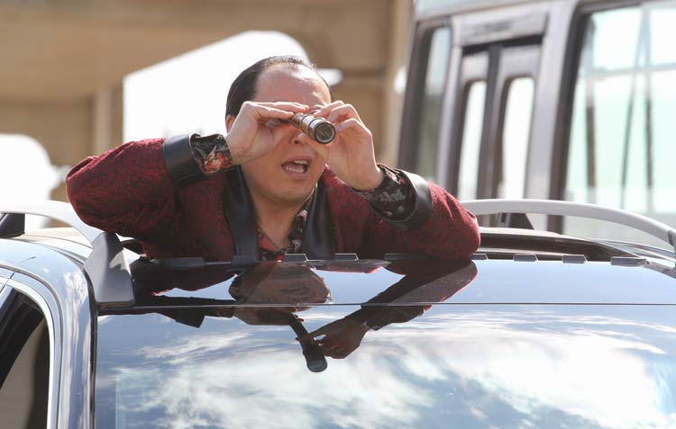
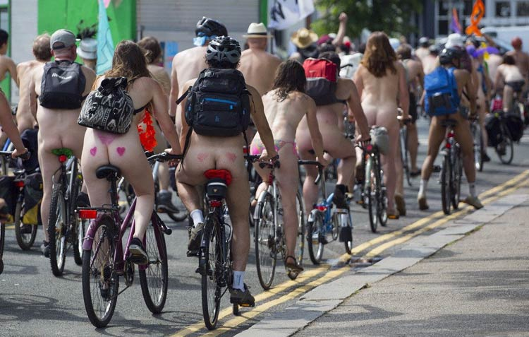

自行车曾经几乎是“结婚标配三大件”之一，另外两位选手分别是缝纫机和手表。后来，自行车在一定程度上变成了浪漫、青春的代名词。比如“我想带你骑单车，我想和你看棒球，想这样没担忧，唱着歌一直走”，比如有个电影叫《十七岁的单车》，比如那时候谈恋爱的场景必备之一就是男生骑单车带着女生飞驰。
但是后来，也不知道发生了什么，就有人说出了“宁愿坐在宝马车里哭，也不坐在自行车上笑”这样的话。反正路上越来越少的人骑自行车了，所以，堵车越来越严重了！
因为堵车，北京首都的名字被人改成了首堵；因为堵车，童谣从“早上空气真叫好， 我们都来做早操。 伸伸臂，弯弯腰， 踢踢腿，蹦蹦跳， 天天锻炼身体好”变成了“东四环堵，东四环堵，东四环堵完建国路堵”。
除了中国，世界上还有很多国家也堵车，而且汽车尾气导致雾霾，各国都深受其害。所以，很多人发起了各种各样的游行、示威，企图唤起人们对自行车的那份爱，但效果都不太明显。后来，有人把衣服脱了个精光……
脱个精光，然后骑自行车游街！不多说了，放个图感受一下！
裸骑者们希望以这种和平的方式，引起人们的关注，进而减少交通拥堵、尾气排放、汽车对骑行者和步行者的伤害。为了环保，他们不惜裸露身体，他们是伟大的人、纯粹的人、脱离了低级趣味的人。为了宣传活动，他们还用人肉COS广告牌，把活动口号及各种图案画在身上，以吸引更多人关注环保。
1、每年6月10日是世界裸骑日，这一节日的设立是为了呼吁人们少开车，多骑车；
2、各国的各个城市都有自己的裸骑日，都是裸骑，只是日期不尽相同。